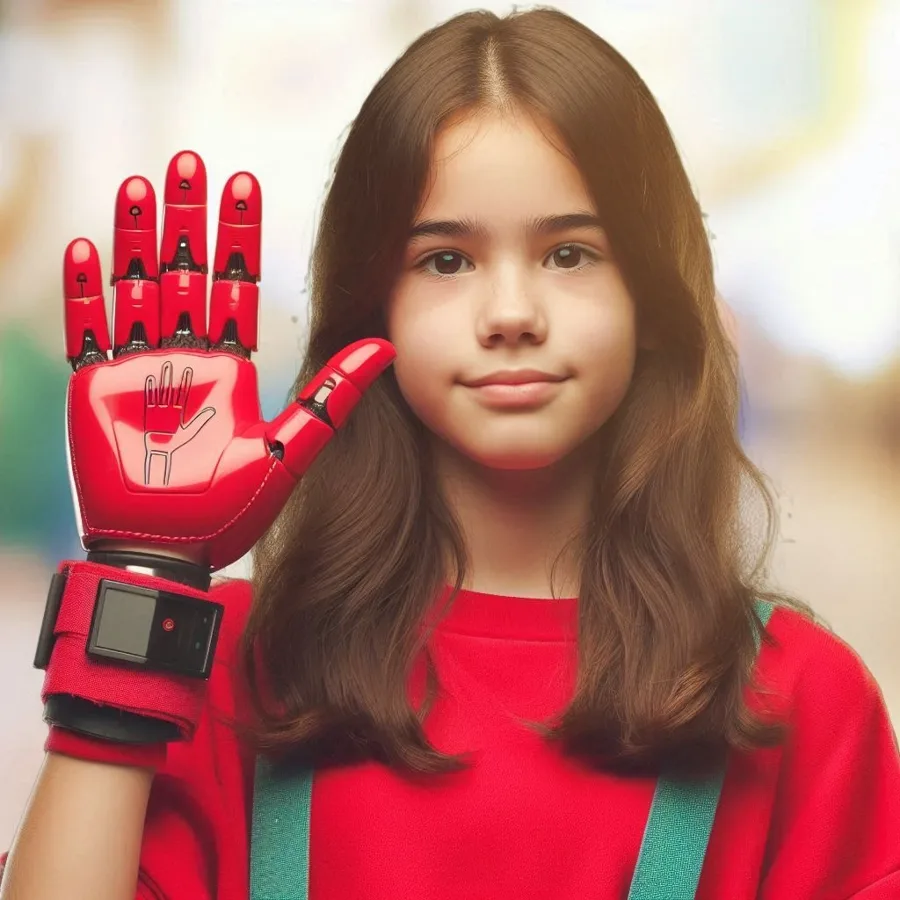

Sign language becomes universal
SignoGlove is a companion that grows with the person who uses it. Today it turns hand positions into spoken phrases. Our goal is for it to also translate sounds into movements or text.

How it works
- The micro:bit board on the glove measures the tilt of the hand.
- It sends that value to the web page over Bluetooth.
- The page picks the phrase from the active topic, shows it and says it out loud.
Vision
We want to transform how Deaf people communicate and open up more opportunities for inclusion and participation in society. Our goal is to remove language barriers so everyone can express themselves and be understood in any setting.
Where we’re headed
We want SignoGlove to become part of Deaf people’s daily lives: in the classroom, at work, at social events and in emergencies, making communication easier and promoting inclusion everywhere.